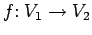
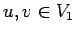
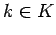
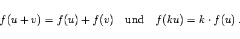

Inhalt Index DeskTop Bronstein

 Algebra und Diskrete Mathematik Klassische algebraische Strukturen Vektorräume
Algebra und Diskrete Mathematik Klassische algebraische Strukturen Vektorräume


Die mit der Struktur von Vektorräumen verträglichen Abbildungen werden lineare Abbildungen genannt.  heißt linear, wenn für alle  und alle  gilt:
|  | (5.219) |
| Beispiel |
|
Die linearen Abbildungen f von |